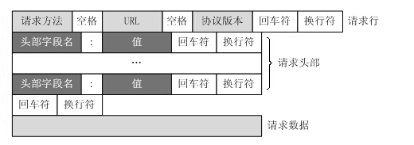
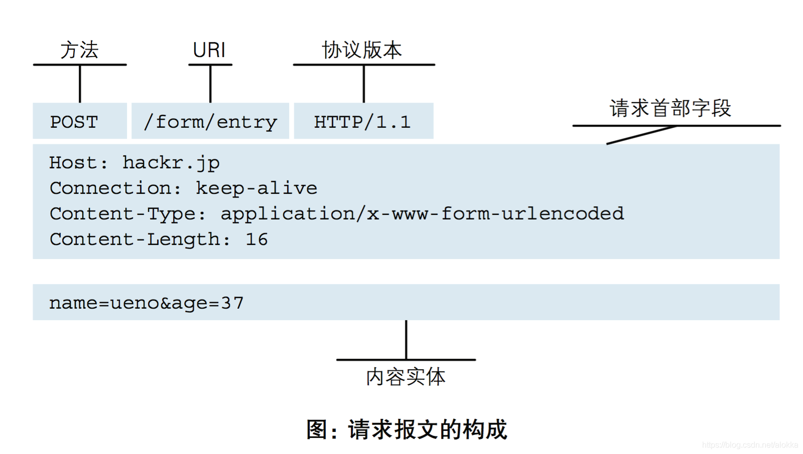
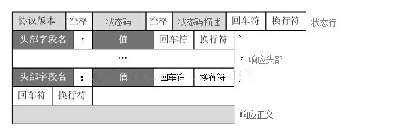
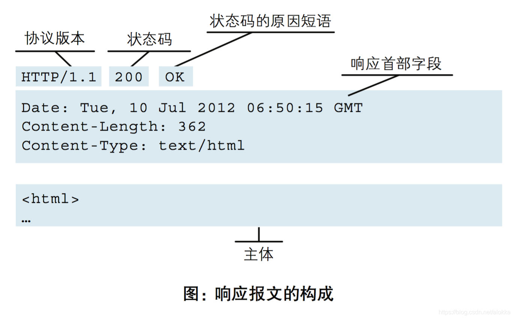

什么是 HTTP
网上已经有很多答案和解释，我总结一下我的理解与笔记
HTTP 全称是“超文本传输协议”，是 客户端（用户）向 服务端（网站）请求和应答的标准，属于应用层协议。
TCP （传输控制协议），是传输层协议。
HTTP 是基于 TCP 连接的基础上的。
HTTP 的工作原理
HTTP 协议定义 Web 客户端如何从 Web 服务器请求 Web 页面，以及服务器如何把数据传送给客户端。
客户端向服务器发送一个请求报文，请求报文包含请求的 方法、URL、协议版本、请求头部 和 请求数据。
服务器以一个状态行作为响应，响应的内容包括 协议的版本、成功或者错误代码、服务器信息、响应头部 和 响应数据。
以下是 HTTP 请求/响应的步骤：
- 客户端连接到Web服务器
一个HTTP客户端，通常是浏览器，与Web服务器的HTTP端口（默认为80）建立一个TCP套接字连接。
例如，http://www.luffycity.com。
- 发送 HTTP 请求
通过TCP套接字，客户端向Web服务器发送一个文本的请求报文，一个请求报文由请求行、请求头部、空行和请求数据 4 部分组成。
- 服务器接受请求并返回HTTP响应
Web服务器解析请求，定位请求资源。服务器将资源复本写到 TCP 套接字，由客户端读取。一个响应由状态行、响应头部、空行和响应数据 4 部分组成。
- 释放连接 TCP 连接
若 connection 模式为 close，则服务器主动关闭TCP连接，客户端被动关闭连接，释放TCP连接;若connection 模式为 keepalive，则该连接会保持一段时间，在该时间内可以继续接收请求;
- 客户端浏览器解析HTML内容
客户端浏览器首先解析状态行，查看表明请求是否成功的状态代码。然后解析每一个响应头，响应头告知以下为若干字节的HTML文档和文档的字符集。客户端浏览器读取响应数据 HTML，根据 HTML 的语法对其进行格式化，并在浏览器窗口中显示。
例如：在浏览器地址栏键入URL，按下回车之后会经历以下流程：
- 浏览器向 DNS 服务器请求解析该 URL 中的域名所对应的 IP 地址;
- 解析出 IP 地址后，根据该 IP 地址和默认端口 80，和服务器建立 TCP 连接;
- 浏览器发出读取文件(URL 中域名后面部分对应的文件)的 HTTP 请求，该请求报文作为 TCP 三次握手的第三个报文的数据发送给服务器;
- 服务器对浏览器请求作出响应，并把对应的 html 文本发送给浏览器;
- 释放 TCP 连接;
- 浏览器将该 html 文本并显示内容;
HTTP协议 自身不对请求和响应之间的通信状态进行保存，但是 HTTP/1.1 引入了 Cookie 技术，有了 Cookie 就可以管理状态了。
HTTP/1.1协议中共定义了八种方法来以不同方式操作指定的资源
- GET
- 向指定的资源发出“显示”请求，最好只用在读取数据。
- HEAD
- 与GET方法一样，都是向服务器发出指定资源的请求。只不过服务器将不传回资源的本文部分，而是返回其中“关于该资源的信息”（元信息或称元数据）。
- POST
- 向指定资源提交数据，请求服务器进行处理（例如提交表单或者上传文件），数据被包含在请求本文中。
- PUT
- 向指定资源位置上传其最新内容。
- DELETE
- 请求服务器删除Request-URI所标识的资源
- TRACE
- 回显服务器收到的请求，主要用于测试或诊断。
- OPTIONS
- 这个方法可使服务器传回该资源所支持的所有HTTP请求方法。用’*'来代替资源名称，向Web服务器发送OPTIONS请求，可以测试服务器功能是否正常运作。
- CONNECT
- HTTP/1.1协议中预留给能够将连接改为管道方式的代理服务器。通常用于SSL加密服务器的链接（经由非加密的HTTP代理服务器）
状态代码的第一个数字代表当前响应的类型：
- 1xx消息——请求已被服务器接收，继续处理
- 2xx成功——请求已成功被服务器接收、理解、并接受
- 3xx重定向——需要后续操作才能完成这一请求
- 4xx请求错误——请求含有词法错误或者无法被执行
- 5xx服务器错误——服务器在处理某个正确请求时发生错误
HTTP 请求格式(请求协议)


HTTP 响应格式（响应协议）

